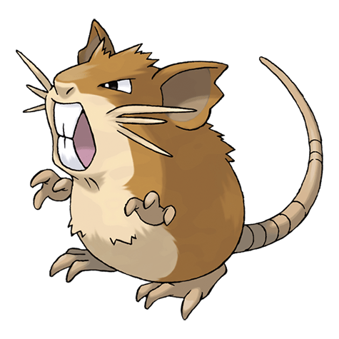
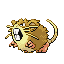

Назад
Ратикат

Ратикат — Покемон первого поколения под номером 20 в Покедекс. Обитает он в регионе Канто и относится к Нормальному типу. Это финальная стадия эволюции Покемона Раттаты. Крепкие клыки Ратикейта постоянно растут. Чтобы их стачивать, этот Покемон грызёт камни и брёвна. Он даже может прогрызть стены домов.
Тип:
Нормальный
Эволюция

# 020 Ратикат
Финальная стадия